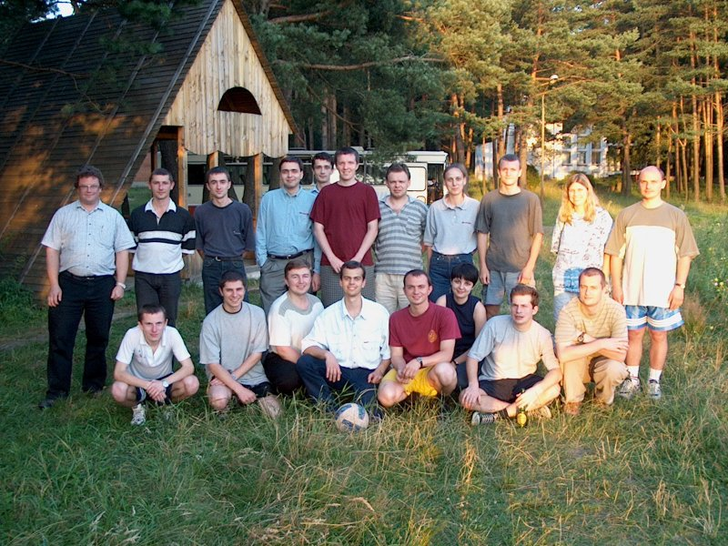
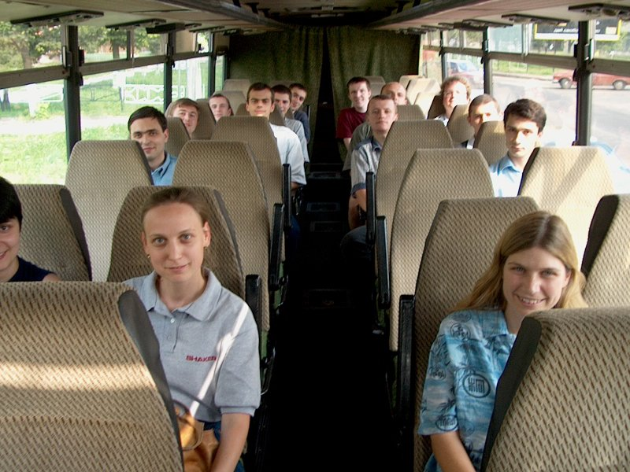
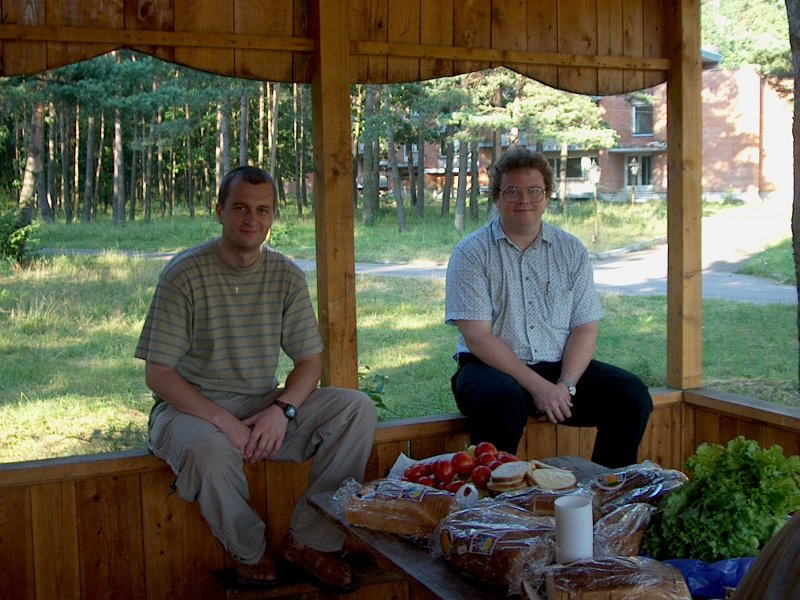
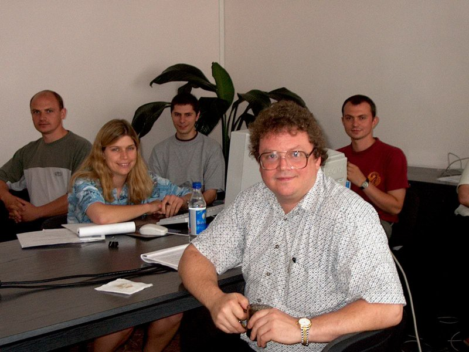
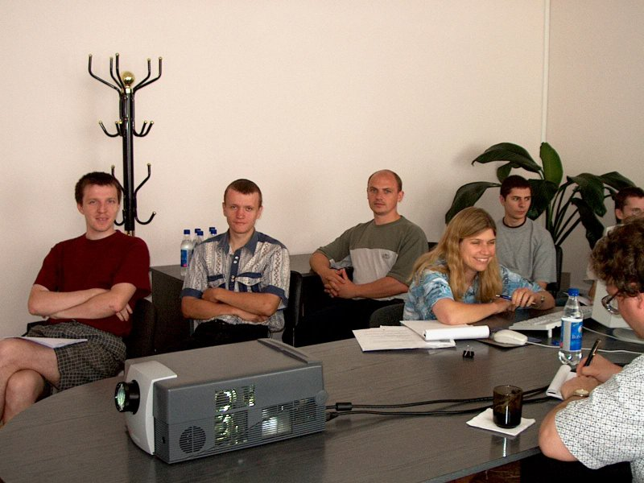
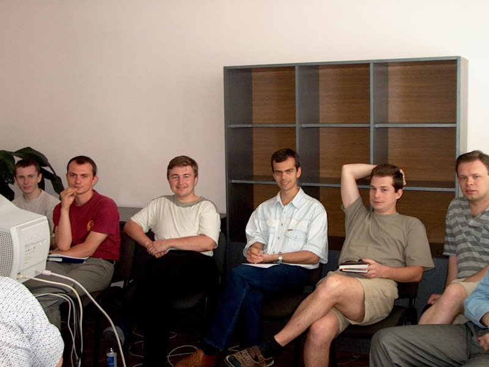
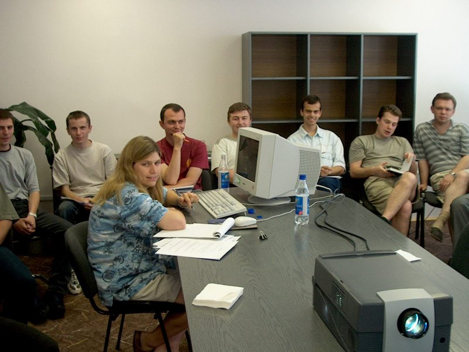
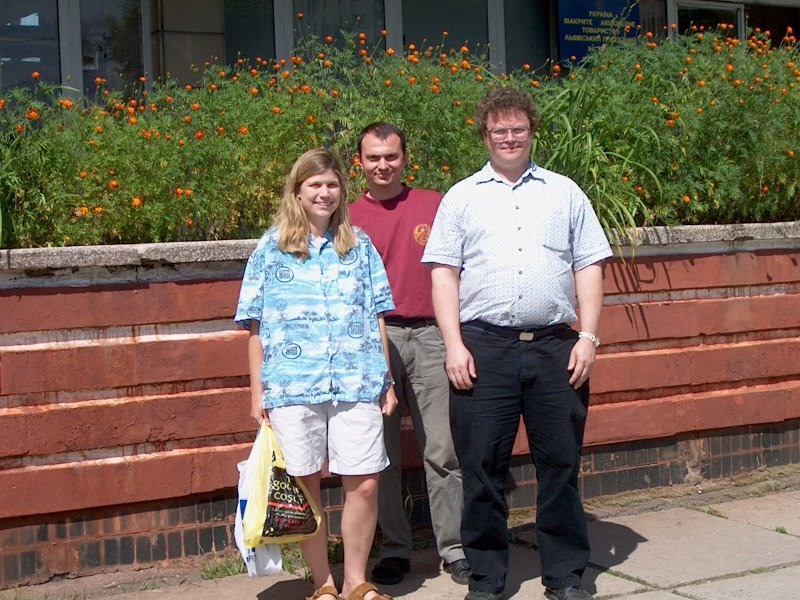
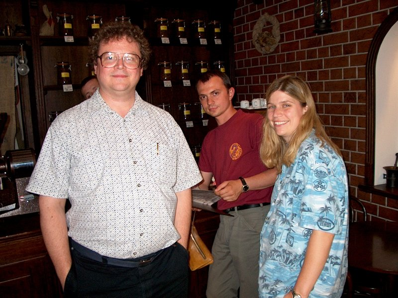

This page contains pictures taken by Taras Kytsmey during Shaker's
visit to SoftServe on July 13-20, 2001.
The names of the people in the team picture below are as follows:
- Top row:
- William St. Clair, Vsevolod Lutchyn, Nazar Stasiv, Marjan Rachynsky,
Yury Garbuziuk, Andrij Kit, Taras Vilhovyy, Oksana Loyko, Ihor
Vasutyn, Stacey Mizerak, Andriy Bidochko.
- Bottom row:
- Volodymyr Krupach, Dmytro Troyan, Andriy Bidochko, Ihor Mosil, Ihor
Pasemko, Olena Lolyada (Human Resource Manager), Sergiy Korniyenko,
Victor Holovaschenko.
- Not pictured:
- Taras Kytsmey, Bohdan Hatalyak








